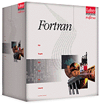

| system |
| home page |
| Users- The Benefits of XP- States Confront Gates with Modular Windows . - Microsoft Releases XP PowerToys Update Click here. - Program Installation In User AccountsHave I been conned or am . This Month in Dr eXPert - 10 user limit workaround - Monitor double-vision - Moviemaker Video-CD authoring This site is currently testing WebTrends Live. . |
|  | A small, individualized, wearable, battery powered cognitive prosthetic assistive technology system designed for individuals with a wide range of cognitive disabilities. It is appropriate for many individuals with brain injuries, developmental disabilities, and dementia (including the early stages of Alzheimer's). The supporting content delivered by the system is individualized for the user by a Rehabilitation Specialist and developed using authoring tools provided by Cogent Systems, Inc. The system is appropriate for use in employment, independent living, supported living situations, or a combination of these situations. The user's individualized support content can be updated when needed based on changes in the the user's needs. |
| Further down the hierarchy, a cue is made up of a flexible combination of subcues. A given subcue may appear in numerous cues, allowing an efficiency to programming since you may want to use certain subcues repeatedly, while varying other parameters in the cue. Some subcues perform automated tasks while others simply allow the user to perform manual tasks more efficiently. Each type of subcue has its own window for editing. Check boxes enable any combination of subcues within the cue, and pop-up menus allow the user to select the particular subcues to trigger. |